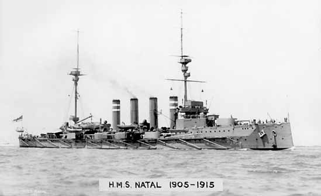
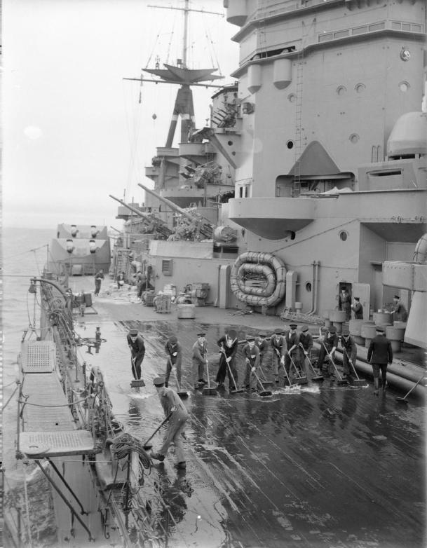
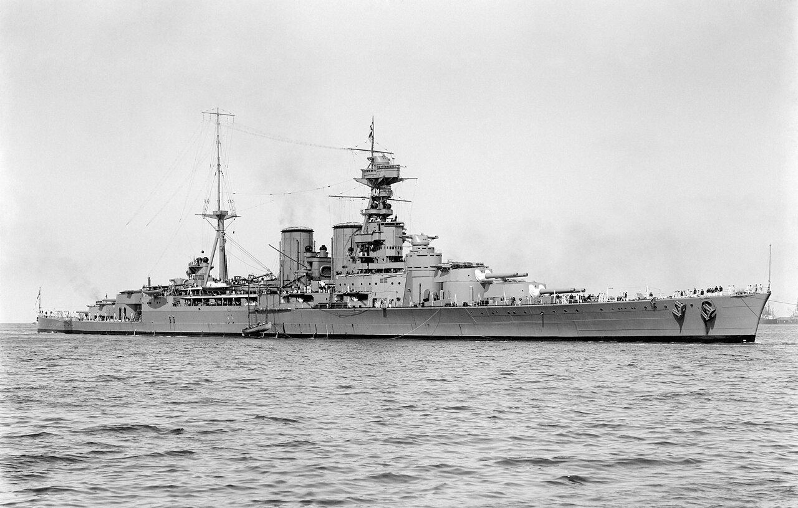
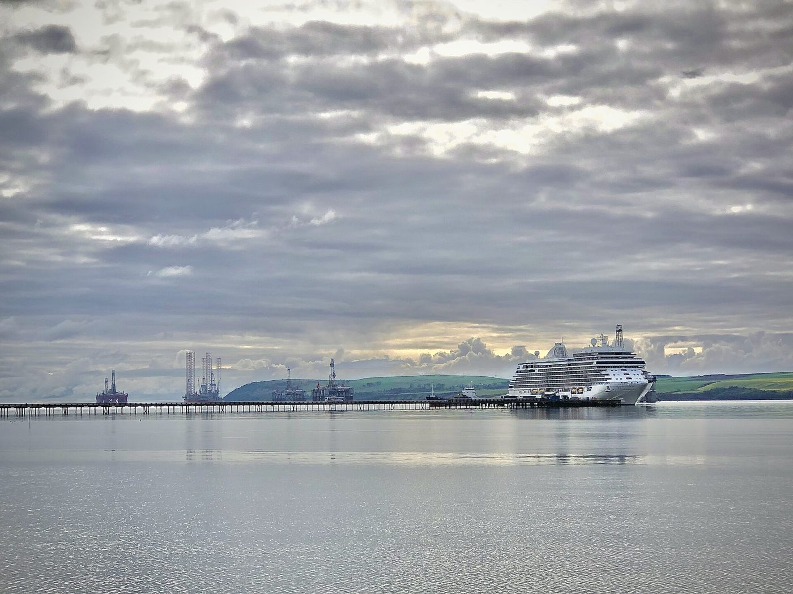
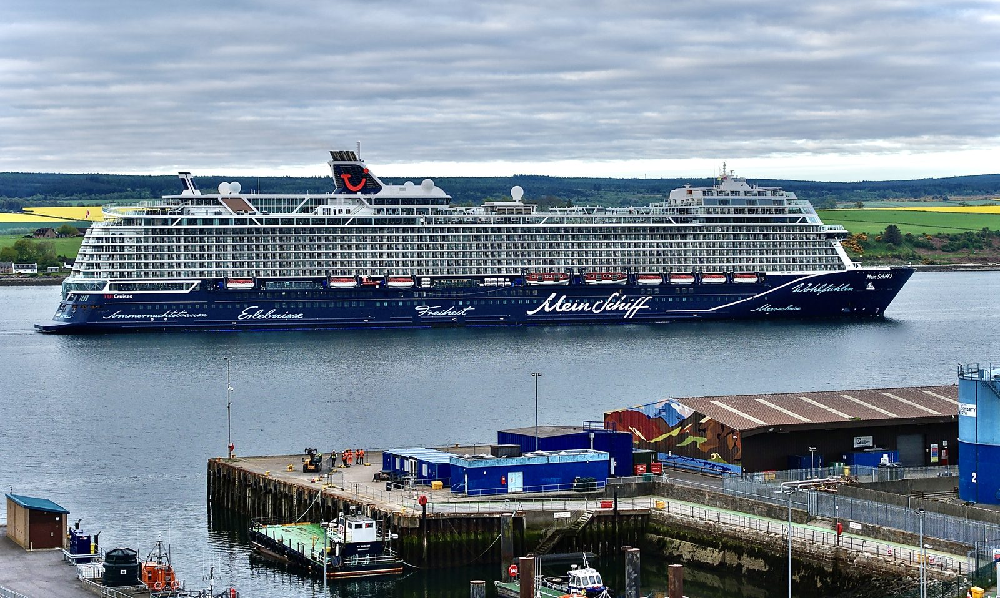

Stand on the shore at Invergordon on a still morning and the Cromarty Firth barely seems to move. The water lies flat and pewter-grey, the hills of the Black Isle reflected so cleanly you could almost walk across to them. A cruise ship the size of a small town sits at the pier without so much as a ripple at its hull. Oil rigs — vast, skeletal, taller than anything else for miles — stand out in the channel as though someone set them down and forgot them. It is one of the most curiously calm stretches of water in Britain.
That calm is not an accident. It is geology, and it is the whole story.
The Door in the Hills
The Cromarty Firth is a sea loch with a secret. Its entrance, where it meets the open Moray Firth and the North Sea beyond, is guarded by two great headlands that rise almost sheer from the water — the North Sutor and the South Sutor, climbing to roughly 151 and 141 metres. Sailors have called them “The Sutors” for centuries, and together they form a narrow entrance channel roughly half a mile wide. Pass between them and you enter another world: a long, broad basin of deep, still water, wrapped on every side by hills.
The numbers are what make it extraordinary. The entrance channel runs between roughly 15 and 26 metres deep; inside, the Firth plunges to as much as 55 metres. That is deep enough to accommodate very large vessels that many smaller ports simply could not handle. And because the basin sits behind the narrow door of the Sutors, then folds again behind a second inner narrowing, it is sheltered twice over. The Atlantic gales that batter the open coast a few miles away lose most of their force here. The water rarely shows the fury of the sea beyond the headlands. It is, in the dry language of the harbour authorities, one of the safest and most commodious anchorages in the north of Scotland.
A deep-water harbour with naturally sheltered, year-round access, hidden behind a defensible gate in the hills. To a visitor it is simply beautiful. To the Royal Navy, a century ago, it was something close to perfect.
Churchill’s Harbour
In September 1912, a young and famously restless First Lord of the Admiralty came north to see it for himself. His name was Winston Churchill.
Churchill spent a week at Cromarty inspecting the fleet — torpedo boat destroyers, the new submarines — and he was captivated. He called the Cromarty Firth “incomparably the finest harbour on the East Coast of Great Britain.” Here, in this sheltered Highland basin, the Navy could anchor its great fleets in safety, refuel, and shelter from both the weather and the enemy.
Churchill did not just admire it. He fortified it. In 1913 he commissioned gun batteries for the South Sutor, and by the autumn of 1914, with the First World War underway, both headlands bristled with heavy guns and the entrance was strung with anti-submarine defences. The door in the hills had been locked. Through the Great War the Cromarty Firth served as a main anchorage for the Grand Fleet, and Invergordon became a vital oiling station, fuelling the warships that held the North Sea against the German High Seas Fleet.
For a quiet Highland town it was a staggering transformation: from herring coast to one of the nerve centres of British naval power.
The Night the Natal Died
And then, three days after Christmas in 1915, the Firth took a terrible price.
HMS Natal was an armoured cruiser, anchored in the Cromarty Firth with the fleet. On the afternoon of 30 December her captain, Eric Back, was hosting a film show aboard — and in the gentler spirit of an earlier age, he had invited guests: the wives and children of his officers, nurses from a nearby hospital ship, friends from the shore. They had come aboard for an afternoon’s entertainment in the warmth and safety of the anchorage.
At about twenty past three, a series of explosions tore through the ship.
There was no enemy. No U-boat had slipped past the Sutors. The catastrophe appears to have come from within — an internal ammunition explosion, possibly caused by faulty cordite, ripped Natal open from the inside. Within five minutes she had rolled over and capsized in the freezing Firth. Between 390 and 421 people died: sailors, more than sixty Royal Marines, and the very guests who had come aboard for a film and an afternoon’s peace. Children were among them.
The wreck lay in the Firth for decades, a hazard marked on the charts, before it was largely broken up. For the families of Easter Ross and far beyond, the loss of the Natal was a wound that never quite closed — a peacetime afternoon that became one of the worst disasters in the Royal Navy’s home waters, in the very place that was meant to be the safest of all.

The Mutiny That Shook the Pound
If 1915 was tragedy, 1931 was something stranger and, in its way, more astonishing: the moment a few thousand sailors in this quiet Highland firth made the world’s financial markets tremble.
It was the depth of the Great Depression. Britain’s new National Government, scrambling to balance the books, announced sweeping cuts to public spending — and among them, brutal pay cuts for the Royal Navy. For officers the cut was around 10 per cent. But for the lowest-paid ratings — the ordinary seamen who had joined before 1925 — the reduction amounted, in real terms, to as much as 25 per cent of their wages. Men already supporting families on very little were being told to absorb a quarter of their pay.
The Atlantic Fleet was anchored at Invergordon. And on the morning of 15 September 1931, it simply refused.
There was no violence. No officers were harmed, no weapons drawn. The worst resistance centred on four of the fleet’s major warships — Valiant, Rodney, Nelson and the battle-cruiser Hood — but the unrest ran more widely through the Atlantic Fleet: men declined to fall in, declined to weigh anchor, declined to put to sea for the morning’s exercises. They gathered on the forecastles, sang, and held the fleet in harbour. For two days the most powerful navy on earth sat motionless in a Highland firth because its sailors had said — quietly, collectively — no. It became known as the Invergordon Mutiny, one of the very few mutinies in modern British naval history.

The government caved on the worst of the cuts. But the damage was already done, and it was not the kind anyone had foreseen. News that the Royal Navy — the very symbol of British stability — was in open mutiny sent a shockwave through the financial world. Investors panicked. There was a run on the pound. And within days, on 21 September 1931, Britain was forced off the Gold Standard, abandoning the bedrock of its monetary system. Britain was already under severe financial strain that summer — but the mutiny in the Cromarty Firth was a major trigger that helped tip it over the edge, and the tremors were felt around the globe.
The sailors of Invergordon almost certainly never imagined their quiet refusal would be felt in the trading rooms of the world. But it was.

The Sutors: roughly 151 m (North) and 141 m (South) — the two headlands guarding an entrance channel about half a mile wide.
Depth: entrance channel ~15–26 m; up to 55 m inside — deep enough for very large vessels many ports cannot take.
1913: Churchill commissions the South Sutor gun batteries. 1915: HMS Natal lost to an internal explosion — 390–421 dead. 1931: the Invergordon Mutiny helps force Britain off the Gold Standard.
Today: the port reached its 750th drilling-rig visit in 2024, is a ScotWind offshore-wind hub, and welcomed around 118 cruise ships carrying 213,000+ passengers.
The Firth Today
The guns are long gone from the Sutors. The Grand Fleet is a century in the past. There is no naval base at Invergordon any more, no warships at anchor. And yet the thing that drew the Navy here in the first place — that deep, sheltered, remarkably calm water — has never stopped working.

Walk the shore today and the Firth is as busy as it ever was, just in different colours. Out in the channel stand the oil rigs: since the North Sea boom of the 1970s the Cromarty Firth has been a leading location for rig repair and maintenance, and in April 2024 the Port welcomed its 750th drilling-rig visit — there is room here, and shelter, that almost no other port in Britain can offer. Alongside them now is the new industry. The Port of Cromarty Firth has become one of the front-runners of Scotland’s offshore-wind boom, with the great majority of the ScotWind development sites sitting close at hand and tens of millions of pounds earmarked to build the quaysides that will assemble the turbines of the future. The same water that sheltered battleships now shelters the machinery of the energy transition.
And then there are the ships that bring the rest of the world to the Highlands. For roughly seven months of the year, Invergordon is one of Scotland’s busiest cruise ports — the gateway to Loch Ness, the NC500 and the Highlands beyond. In 2024, around 118 cruise ships called here, carrying more than 213,000 passengers — each vessel able to come right up to the pier for precisely the same reason as everything else: the water is deep enough, and calm enough, to take them. Among the most familiar of them is TUI Cruises’ Mein Schiff 2 — a 316-metre, 111,500-tonne floating resort and the most frequent caller of the entire 2026 season, bringing around 2,700 German guests ashore on every visit.

It is easy, standing on the shore at Invergordon, to see only the view — the still water, the reflected hills, the great white ships. But the view is the history. The reason a cruise liner can dock here, the reason the rigs shelter here, the reason Churchill fortified here and the Natal anchored here and the fleet mutinied here, is the same in every age: the quiet, deep, sheltered water behind the door in the hills.
That water still matters more than ever. In 2024 alone, the cruise trade it makes possible was worth an estimated £28 million to the Highland economy — proof that this quiet firth, which has shaped wars and currencies, is still quietly shaping the fortunes of the place that grew up around it.
The Firth rarely shows the fury of the open sea. And because of that, for more than a century, it has sat at the centre of events far stormier than anything its surface would ever suggest.
Invergordon is your gateway to one of the world's most history-rich landscapes. See the full 2026 cruise schedule — ship names, arrival times, and what to do with your day ashore.
View the 2026 Cruise Schedule →Port of Cromarty Firth — Renewables, Cruise & Annual Review 2024 ↗
Royal Navy — Anniversary of the loss of HMS Natal ↗
Ross & Cromarty Heritage — Sutor Fortifications & HMS Natal ↗
International Churchill Society — Churchill, the Admiralty, and Scotland ↗
Offshore Magazine — Cromarty Firth marks 750th drilling-rig visit (2024) ↗
The National Archives — The Invergordon Mutiny, 1931 ↗
Supplementary background: Wikipedia (Cromarty Firth, HMS Natal, Invergordon Mutiny).